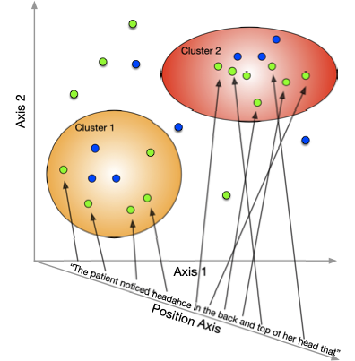

Unsupervised Position-Based Semantic Matching#


An API to match spans of semantically similar text across documents. Each match is a span of text in a source document and another span of text in a target document that are both tied together.
Table of Contents#
Introduction#
Spans are formed by a weighted combination of the semantic similarity of the each document’s text and the token position. Hyperparameters are used to control which take precedent (semantic similarity or token position for longer contiguous token spans).
This is done using position embeddings on a third (see Figure 1) axis shows data blue word embeddings moving from cluster 1 to cluster 2. Cluster spans the discharge summaries (orange), the note antecedent (green) and arrows connecting the tokens to word points.

Figure 1
For more information, see “Hybrid Semantic Positional Token Clustering” in our paper Hospital Discharge Summarization Data Provenance.
Documentation#
See the full documentation. The API reference is also available.
Usage#
from zensols.cli import CliHarness
from zensols.nlp import FeatureDocument, FeatureDocumentParser
from zensols.spanmatch import Match, MatchResult, Matcher, ApplicationFactory
SOURCE = """\
Johannes Gutenberg (1398 – 1468) was a German goldsmith and publisher who
introduced printing to Europe. His introduction of mechanical movable type
printing to Europe started the Printing Revolution and is widely regarded as the
most important event of the modern period. It played a key role in the
scientific revolution and laid the basis for the modern knowledge-based economy
and the spread of learning to the masses.
Gutenberg many contributions to printing are: the invention of a process for
mass-producing movable type, the use of oil-based ink for printing books,
adjustable molds, and the use of a wooden printing press. His truly epochal
invention was the combination of these elements into a practical system that
allowed the mass production of printed books and was economically viable for
printers and readers alike.
"""
SUMMARY = """\
The German Johannes Gutenberg introduced printing in Europe. His invention had a
decisive contribution in spread of mass-learning and in building the basis of
the modern society.
"""
harness: CliHarness = ApplicationFactory.create_harness()
doc_parser: FeatureDocumentParser = harness['spanmatch_doc_parser']
matcher: Matcher = harness['spanmatch_matcher']
source: FeatureDocument = doc_parser(SOURCE)
summary: FeatureDocument = doc_parser(SUMMARY)
# shorten source doc span length by scaling up positional importance
matcher.hyp.source_position_scale = 2.5
# elongate summary doc span length by scaling up positional importance
matcher.hyp.target_position_scale = 0.9
res: MatchResult = matcher(source, summary)
match: Match
for i, match in enumerate(res.matches[:5]):
match.write(include_flow=False)
Output:
2023-06-11 08:22:38,392 24 matches found
source (0, 55):
Johannes Gutenberg (1398 – 1468) was a German goldsmith
target (4, 29):
German Johannes Gutenberg
source (524, 631):
type, the use of oil-based ink for printing books, adjustable molds, and the use
of a wooden printing press
target (4, 59):
German Johannes Gutenberg introduced printing in Europe
source (301, 421):
scientific revolution and laid the basis for the modern knowledge-based economy
and the spread of learning to the masses
target (106, 177):
spread of mass-learning and in building the basis of the modern society
source (516, 585):
movable type, the use of oil-based ink for printing books, adjustable
target (116, 169):
mass-learning and in building the basis of the modern
source (168, 199):
started the Printing Revolution
target (106, 145):
spread of mass-learning and in building
Obtaining#
The easiest way to install the command line program is via the pip installer:
pip3 install --use-deprecated=legacy-resolver zensols.spanmatch
Binaries are also available on pypi.
Citation#
If you use this project in your research please use the following BibTeX entry:
@inproceedings{landes-etal-2023-dsprov,
title = "{{Hospital Discharge Summarization Data Provenance}}",
author = "Landes, Paul and
Chaise, Aaron J. and
Patel, Kunal P. and
Huang, Sean S. and
Di Eugenio, Barbara",
booktitle = "Proceedings of the 21st {{Workshop}} on {{Biomedical Language Processing}}",
month = jul,
year = "2023",
day = 9,
address = "Toronto, Canada",
publisher = "{{Association for Computational Linguistics}}"
}